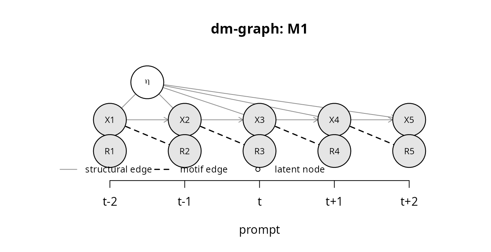
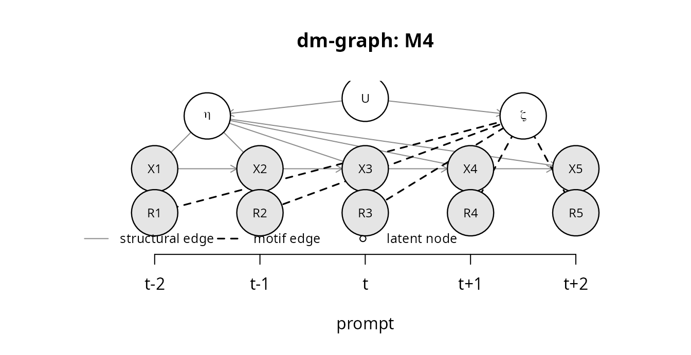
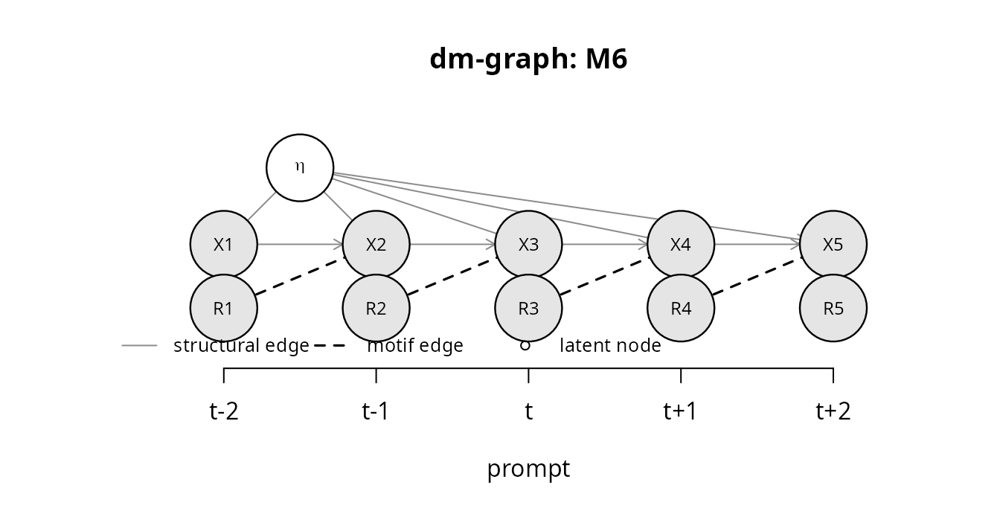
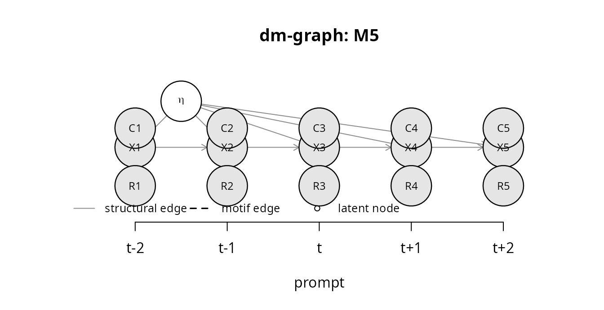
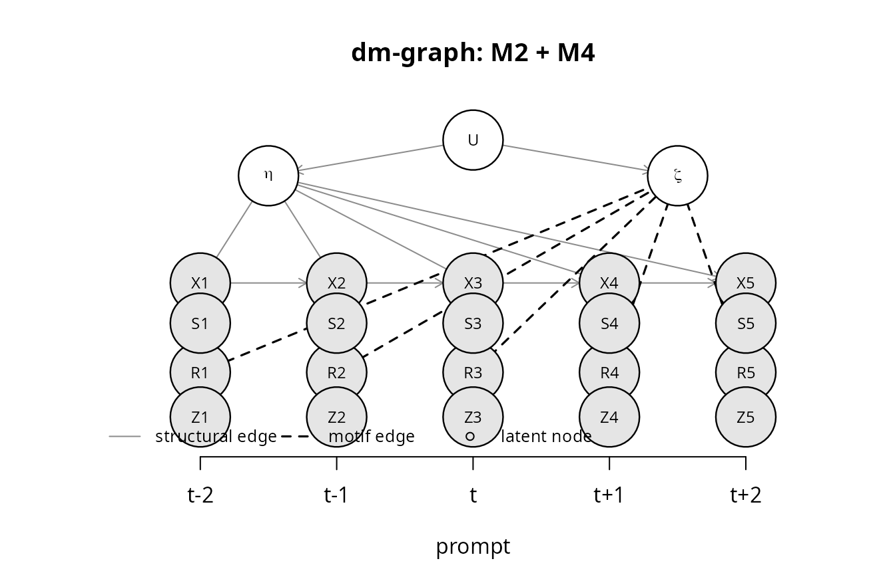

Dynamic missingness graphs: the motif taxonomy and recoverability
Hsiu-Ting Yu
Source:vignettes/dm-graphs.Rmd
dm-graphs.RmdWhat a dm-graph is
A dynamic missingness graph (dm-graph) is a directed acyclic graph over the unrolled within-person process of an experience-sampling study. It extends the missingness graphs of Mohan and Pearl (2021) to repeated prompts: instead of one node per variable, the graph has one node per variable and prompt, and the missingness mechanism is a set of edges into the response indicators.
The nodes are
-
eta, the person’s typical state (a person-level latent variable; in estimation it is realized by person-specific intercepts); -
X1, X2, ..., the momentary states at prompts 1, 2, …; the third prompt of the window is the focal prompt t, soX3is Xt,X2is Xt-1, and so on; -
R1, R2, ..., the response indicators (1 = the prompt was answered, and the states are recorded); - optionally
C(a context variable, latent or observed),S(an always-observed passive sensor),Z(a randomized probe that forces a response),zeta(a person-level response propensity) andU(a latent common cause ofetaandzeta).
Two kinds of edges are always present: the dynamics
X_{t-1} -> X_t and the person effect
eta -> X_t. Everything else is a declaration about
why prompts are skipped.
g <- dm_graph("M0")
g
#> Dynamic missingness graph (window of 5 prompts)
#> motifs: M0
#> context: none
#> sensor: FALSE probe: FALSE
#> nodes: 11 edges: 9
g$edges[1:6, ]
#> from to
#> [1,] "eta" "X1"
#> [2,] "eta" "X2"
#> [3,] "eta" "X3"
#> [4,] "eta" "X4"
#> [5,] "eta" "X5"
#> [6,] "X1" "X2"The seven motifs
Each motif adds a specific set of edges. The codes are the ones used
throughout the package (in dm_graph(),
simulate_ema() and the printed reports).
| Code | Name | Edges added | Substantive story |
|---|---|---|---|
| M0 | completely random | none into R
|
a phone left in another room |
| M1 | lagged-state dependence | X_{t-1} -> R_t |
high stress in the morning predicts skipping the afternoon prompt |
| M2 | self-censoring | X_t -> R_t |
the current state itself causes the skip: too anxious to answer right now |
| M3 | burden or fatigue | R_{t-1} -> R_t |
having skipped once makes skipping again more likely; compliance declines |
| M4 | person propensity |
zeta -> R_t, U -> eta,
U -> zeta
|
some people respond less, and they also differ in their typical states |
| M5 | context confounding |
C_t -> X_t, C_t -> R_t
|
being at work raises stress and lowers responding |
| M6 | reactivity | R_{t-1} -> X_t |
answering a prompt changes the next state (assessment reactivity) |
The plots below draw each motif. Structural edges are gray and solid, motif edges are black and dashed, latent nodes are open circles.




Motifs combine. dm_graph(c("M2", "M4")) declares
self-censoring together with a person propensity;
dm_graph(c("M1", "M3")) declares lagged-state dependence
together with burden. A context is declared through
context = "latent" or context = "observed"
(which adds M5 automatically), and
context_persistent = TRUE adds
C_{t-1} -> C_t. Sensors and probes are design features
rather than mechanisms and are declared through
sensor = TRUE and probe = TRUE.
g <- dm_graph(c("M2", "M4"), sensor = TRUE, probe = TRUE)
g
#> Dynamic missingness graph (window of 5 prompts)
#> motifs: M2 + M4
#> context: none
#> sensor: TRUE probe: TRUE
#> nodes: 23 edges: 31
plot(g)
Asking the graph questions: d-separation
dsep() answers whether two sets of nodes are d-separated
given a conditioning set, with the Bayes-ball algorithm (Shachter, 1998;
Koller & Friedman, 2009). The central question for the transition
kernel is whether the response indicator at t is independent of
the state at t given the previous state and the person:
dsep(dm_graph("M1"), "R3", "X3", c("X2", "eta")) # lagged-state dependence: yes
#> [1] TRUE
dsep(dm_graph("M2"), "R3", "X3", c("X2", "eta")) # self-censoring: no
#> [1] FALSE
dsep(dm_graph("M4"), "R3", "X3", c("X2", "eta")) # the person intercept blocks zeta -> R and U -> eta
#> [1] TRUE
dsep(dm_graph("M4"), "R3", "X3", "X2") # without it, R and X are associated through U
#> [1] FALSEdsep() works on any edge list, not only on dm-graphs,
which makes it easy to check textbook cases:
chain <- list(nodes = c("A", "B", "C"), edges = cbind(from = c("A", "B"), to = c("B", "C")))
c(marginal = dsep(chain, "A", "C"), given_B = dsep(chain, "A", "C", "B"))
#> marginal given_B
#> FALSE TRUE
collider <- list(nodes = c("A", "B", "C"), edges = cbind(from = c("A", "C"), to = c("B", "B")))
c(marginal = dsep(collider, "A", "C"), given_B = dsep(collider, "A", "C", "B"))
#> marginal given_B
#> TRUE FALSEThe recoverability report
recoverability() applies the d-separation conditions
derived in Yu (2026) to a declared graph and reports, for every estimand
of the two-level VAR(1), whether it is structurally recoverable from the
answered prompts and by which estimator. Recoverability is used in the
sense of Mohan and Pearl (2021): there exists a consistent estimator
that uses only the observed part of the data.
recoverability(dm_graph("M1"))
#> Recoverability report for motifs: M1
#>
#> * transition kernel (Phi, Psi, contemporaneous network)
#> [recoverable] complete adjacent pairs, within-person (person intercepts)
#> condition: R_t _||_ X_t | {X_{t-1},eta} and R_{t-1} _||_ X_t | {X_{t-1},eta, R_t}
#> * person mean via observed within-person mean
#> [NOT recoverable] biased
#> condition: R_t _||_ X_t | {eta}
#> * person mean via recovered dynamics
#> [recoverable] mu_i = (I - Phi)^{-1} c_i from the recovered kernel
#> condition: transition kernel recoverable
#> * between-person law (mu, Sigma_mu), person-weighted
#> [recoverable] one recovered mean per person (dynamics-recovered means), persons weighted equally; positivity assumed
#> condition: a person-mean estimator is available and P(R_t = 1 | eta) > 0
#> * between-person law, prompt-weighted (pooling answered prompts)
#> [NOT recoverable] biased: response rate depends on the person's states
#> condition: R_t _||_ X_t | {empty set}
#> * silence test (coefficient of R_t in X_{t+1} ~ X_{t-1} + R_t, within person)
#> null expected (test valid as a test of the recoverable class)
#> condition: R_t _||_ X_{t+1} | {X_{t-1},eta,R_{t-1},R_{t+1}}The estimands are
- the transition kernel (the lagged coefficients Phi,
the innovation covariance Psi and hence the temporal and the
contemporaneous network), recovered from complete adjacent pairs with
person intercepts when
R_tis independent ofX_tgivenX_{t-1}and the person, andR_{t-1}is independent ofX_tgiven the same set plusR_t; - the person mean read from the answered prompts,
recovered when
R_tis independent ofX_tgiven the person; - the person mean recovered from the dynamics,
mu_i = (I - Phi)^{-1} c_i, available whenever the kernel is recoverable and there is no reactivity; - the between-person law (mean vector and covariance of the person means), person-weighted, available whenever some person-mean estimator is;
- the same law prompt-weighted (pooling answered
prompts), which additionally needs
R_tindependent ofX_tmarginally; and - two rows that do not describe recoverability but the expected behavior of the silence test and (when a sensor is declared) the sensor-gap test under the graph: whether their null hypothesis is implied, so that a rejection speaks against the declared class.
A table over the taxonomy
The loop below reproduces the recoverability table of the accompanying article for all single motifs and the combinations that matter in practice.
decls <- list("M0", "M1", "M2", "M3", "M4", "M5", "M6", c("M1", "M3"), c("M1", "M4"),
c("M3", "M4"), c("M2", "M4"), c("M2", "M3"))
tab <- do.call(rbind, lapply(decls, function(m) {
r <- recoverability(dm_graph(m))
data.frame(motifs = paste(m, collapse = "+"),
kernel = r$recoverable[1], mean_obs = r$recoverable[2], mean_dyn = r$recoverable[3],
law_person = r$recoverable[4], law_prompt = r$recoverable[5],
silence_null = attr(r, "silence_null"))
}))
#> M5 declared without 'context': a latent context is assumed
tab
#> motifs kernel mean_obs mean_dyn law_person law_prompt silence_null
#> 1 M0 TRUE TRUE TRUE TRUE TRUE TRUE
#> 2 M1 TRUE FALSE TRUE TRUE FALSE TRUE
#> 3 M2 FALSE FALSE FALSE FALSE FALSE FALSE
#> 4 M3 TRUE TRUE TRUE TRUE TRUE TRUE
#> 5 M4 TRUE TRUE TRUE TRUE FALSE TRUE
#> 6 M5 FALSE FALSE FALSE FALSE FALSE FALSE
#> 7 M6 TRUE TRUE FALSE TRUE TRUE FALSE
#> 8 M1+M3 TRUE FALSE TRUE TRUE FALSE FALSE
#> 9 M1+M4 TRUE FALSE TRUE TRUE FALSE TRUE
#> 10 M3+M4 TRUE TRUE TRUE TRUE FALSE TRUE
#> 11 M2+M4 FALSE FALSE FALSE FALSE FALSE FALSE
#> 12 M2+M3 FALSE FALSE FALSE FALSE FALSE FALSEThree patterns organize the table.
-
M0, M1, M3, M4 and their combinations are
recoverable. Skipping may depend on the previous state, on the
previous response, or on a person’s stable propensity, and the answered
adjacent pairs with person intercepts still recover the dynamics. The
only casualty is the prompt-weighted between-person law, which is biased
whenever the response rate depends on a person’s states or on
zeta. -
M2 and latent M5 are not recoverable.
Self-censoring and an unobserved context make
R_tdepend onX_titself, and no conditioning set of observed variables blocks the path. Structural non-recoverability does not say how large the bias of a given estimator is: in the additive simulations of Yu (2026) the lagged coefficients are barely affected by a serially independent latent context (the shift lands in the intercepts) but are biased under a persistent one, while the means are biased in both cases, and under self-censoring everything is biased. This is where the sensitivity analysis ofvignette("sensitivity-analysis")comes in. - M6 is asymmetric. Reactivity leaves the kernel recoverable (complete pairs estimate the assessment-conditioned kernel), but the intercept of the answered pairs absorbs the reactivity shift, so the person mean must be read from the answered prompts rather than from the dynamics.
The silence_null column shows where the silence test is
a valid test of the recoverable class: everywhere in the recoverable
class except M1 + M3, where conditioning on an answered prompt
at t + 1 opens a collider at R_{t+1}: its parents
are R_t (burden) and X_t (lagged-state
dependence), and X_t drives X_{t+1}. The
report says so in words:
r13 <- recoverability(dm_graph(c("M1", "M3")))
r13$estimator[grepl("silence", r13$estimand)]
#> [1] "null violated although the kernel is recoverable (collider at R_{t+1}); use the sensor-gap test or check for fatigue first"Observed contexts, sensors and probes
An observed context turns latent M5 into a recoverable mechanism: the
context enters the conditioning set (covariate adjustment,
fit_pairs(covariates = )), or the pairs are reweighted so
that the context-marginal kernel is recovered
(fit_ipw()).
recoverability(dm_graph("M5", context = "observed"))[1, c("recoverable", "estimator")]
#> recoverable
#> 1 TRUE
#> estimator
#> 1 complete pairs, context-conditional kernel (covariate adjustment); context-marginal kernel by stabilized IPW on CA sensor adds the sensor-gap row, which is valid also under M1 + M3 because nothing is conditioned on at t + 1:
rs <- recoverability(dm_graph(c("M1", "M3"), sensor = TRUE))
rs$estimator[grepl("sensor", rs$estimand)]
#> [1] "null expected (test valid as a test of the recoverable class)"A probe adds a row for the kernel estimated from probe prompts only.
Because Z_t = 1 forces R_t = 1, complete pairs
restricted to probe prompts are not selected on X_t even
under self-censoring; this is what
calibrate_delta(method = "probe") exploits.
rp <- recoverability(dm_graph("M2", probe = TRUE))
rp[rp$estimand == "transition kernel from probe prompts", c("recoverable", "estimator")]
#> recoverable
#> 2 TRUE
#> estimator
#> 2 complete pairs restricted to probe prompts (Z_t = 1); delta calibrated by the probe contrastChoosing a declaration in practice
The graph is a declaration, not a finding: it records what
the analyst is willing to assume about why prompts were skipped, and
recoverability() says what follows. A workable procedure
is
- start from the design: are there always-observed channels (sensor), forced-response prompts (probe), recorded contexts?
- declare the mechanisms that the design and the pilot evidence make plausible (compliance patterns by time of day suggest M1 or M5; declining compliance suggests M3; people with low compliance differing in level suggests M4; content that is aversive to report suggests M2);
- read the report; if the kernel is recoverable, estimate with
fit_pairs()and run the tests ofvignette("testing-informativeness")as checks; if not, run the sensitivity analysis; - record the declaration with
missingness_declaration().
References
Koller, D., & Friedman, N. (2009). Probabilistic graphical models: Principles and techniques. MIT Press.
Mohan, K., & Pearl, J. (2021). Graphical models for processing missing data. Journal of the American Statistical Association, 116, 1023-1037. https://doi.org/10.1080/01621459.2021.1874961
Shachter, R. D. (1998). Bayes-ball: The rational pastime. In Proceedings of the Fourteenth Conference on Uncertainty in Artificial Intelligence (pp. 480-487). Morgan Kaufmann.
Yu, H.-T. (2026). What skipped prompts hide: Detecting, diagnosing, and correcting informative nonresponse in ecological momentary assessment. Manuscript under review.